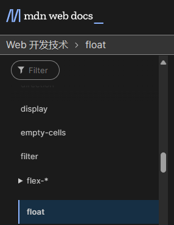

 float CSS属性指定一个元素应沿其容器的左侧或右侧放置，允许文本和内联元素环绕它。该元素从网页的正常流动（文档流）中移除，但是仍然保持部分的流动性（与绝对定位相反）。当一个元素浮动之后，它会被移出正常的文档流，然后向左或者向右平移，一直平移直到碰到了所处的容器的边框，或者碰到另外一个浮动的元素。
两只老虎，两只老虎。跑得快，跑得快。一只没有眼睛，一只没有尾巴。真奇怪，真奇怪。真奇怪，真奇怪 两只老虎，两只老虎。跑得快，跑得快。一只没有眼睛，一只没有尾巴。真奇怪，真奇怪。 两只老虎，两只老虎。跑得快，跑得快。一只没有眼睛，一只没有尾巴。真奇怪，真奇怪。真奇怪，真奇怪 两只老虎，两只老虎。跑得快，跑得快。一只没有眼睛，一只没有尾巴。真奇怪，真奇怪。 两只老虎，两只老虎。跑得快，跑得快。一只没有眼睛，一只没有尾巴。真奇怪，真奇怪。真奇怪，真奇怪 两只老虎，两只老虎。跑得快，跑得快。一只没有眼睛，一只没有尾巴。真奇怪，真奇怪。 两只老虎，两只老虎。跑得快，跑得快。一只没有眼睛，一只没有尾巴。真奇怪，真奇怪。真奇怪，真奇怪 两只老虎，两只老虎。跑得快，跑得快。一只没有眼睛，一只没有尾巴。真奇怪，真奇怪。两只老虎，两只老虎。跑得快，跑得快。一只没有眼睛，一只没有尾巴。真奇怪，真奇怪。真奇怪，真奇怪 两只老虎，两只老虎。跑得快，跑得快。一只没有眼睛，一只没有尾巴。真奇怪，真奇怪。两只老虎，两只老虎。跑得快，跑得快。一只没有眼睛，一只没有尾巴。真奇怪，真奇怪。真奇怪，真奇怪 两只老虎，两只老虎。跑得快，跑得快。一只没有眼睛，一只没有尾巴。真奇怪，真奇怪。两只老虎，两只老虎。跑得快，跑得快。一只没有眼睛，一只没有尾巴。真奇怪，真奇怪。真奇怪，真奇怪 两只老虎，两只老虎。跑得快，跑得快。一只没有眼睛，一只没有尾巴。真奇怪，真奇怪。两只老虎，两只老虎。跑得快，跑得快。一只没有眼睛，一只没有尾巴。真奇怪，真奇怪。真奇怪，真奇怪 两只老虎，两只老虎。跑得快，跑得快。一只没有眼睛，一只没有尾巴。真奇怪，真奇怪。两只老虎，两只老虎。跑得快，跑得快。一只没有眼睛，一只没有尾巴。真奇怪，真奇怪。真奇怪，真奇怪 两只老虎，两只老虎。跑得快，跑得快。一只没有眼睛，一只没有尾巴。真奇怪，真奇怪。两只老虎，两只老虎。跑得快，跑得快。一只没有眼睛，一只没有尾巴。真奇怪，真奇怪。真奇怪，真奇怪 两只老虎，两只老虎。跑得快，跑得快。一只没有眼睛，一只没有尾巴。真奇怪，真奇怪。两只老虎，两只老虎。跑得快，跑得快。一只没有眼睛，一只没有尾巴。真奇怪，真奇怪。真奇怪，真奇怪 两只老虎，两只老虎。跑得快，跑得快。一只没有眼睛，一只没有尾巴。真奇怪，真奇怪。两只老虎，两只老虎。跑得快，跑得快。一只没有眼睛，一只没有尾巴。真奇怪，真奇怪。真奇怪，真奇怪 两只老虎，两只老虎。跑得快，跑得快。一只没有眼睛，一只没有尾巴。真奇怪，真奇怪。两只老虎，两只老虎。跑得快，跑得快。一只没有眼睛，一只没有尾巴。真奇怪，真奇怪。真奇怪，真奇怪 两只老虎，两只老虎。跑得快，跑得快。一只没有眼睛，一只没有尾巴。真奇怪，真奇怪。两只老虎，两只老虎。跑得快，跑得快。一只没有眼睛，一只没有尾巴。真奇怪，真奇怪。真奇怪，真奇怪 两只老虎，两只老虎。跑得快，跑得快。一只没有眼睛，一只没有尾巴。真奇怪，真奇怪。两只老虎，两只老虎。跑得快，跑得快。一只没有眼睛，一只没有尾巴。真奇怪，真奇怪。真奇怪，真奇怪 两只老虎，两只老虎。跑得快，跑得快。一只没有眼睛，一只没有尾巴。真奇怪，真奇怪。两只老虎，两只老虎。跑得快，跑得快。一只没有眼睛，一只没有尾巴。真奇怪，真奇怪。真奇怪，真奇怪 两只老虎，两只老虎。跑得快，跑得快。一只没有眼睛，一只没有尾巴。真奇怪，真奇怪。两只老虎，两只老虎。跑得快，跑得快。一只没有眼睛，一只没有尾巴。真奇怪，真奇怪。真奇怪，真奇怪 两只老虎，两只老虎。跑得快，跑得快。一只没有眼睛，一只没有尾巴。真奇怪，真奇怪。两只老虎，两只老虎。跑得快，跑得快。一只没有眼睛，一只没有尾巴。真奇怪，真奇怪。真奇怪，真奇怪 两只老虎，两只老虎。跑得快，跑得快。一只没有眼睛，一只没有尾巴。真奇怪，真奇怪。两只老虎，两只老虎。跑得快，跑得快。一只没有眼睛，一只没有尾巴。真奇怪，真奇怪。真奇怪，真奇怪 两只老虎，两只老虎。跑得快，跑得快。一只没有眼睛，一只没有尾巴。真奇怪，真奇怪。